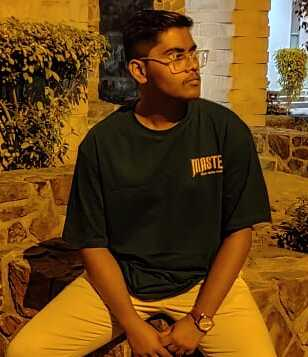

Old man sayings
There is no perfect, there will always be struggle. You just have to pick who you want to struggle with.
Go to :


Orator
MOM
To the girl that's never been called prettyYour smile is noticed and your beauty is unfocused
Your love is so broken but your heart is a token
I promise you are seen and heard
But please never let their words make you hurt
Your tears are worrisome and treasured by the one above
Your deeds are unspoken
Your faith is more than an emotion
Your voice strikes commotion
You are more than chosen by a creator
You are the sunshine above the clouds
Your beauty speaks so loud
Never letting anyone down
You are more than a person being judged
You are an angel from above that is loved

I feel as to be living multiple lives at once.
In one, I have moved along life and I have
become the lantern for myself, guiding the path
ahead. In another, I am bathed in mud. I clean
myself with water, I roll over the greens but nothing
helps, the mud grows thicker and thicker on my
skin. In another, I am still in the past, playing with
the shadows of those who once were.